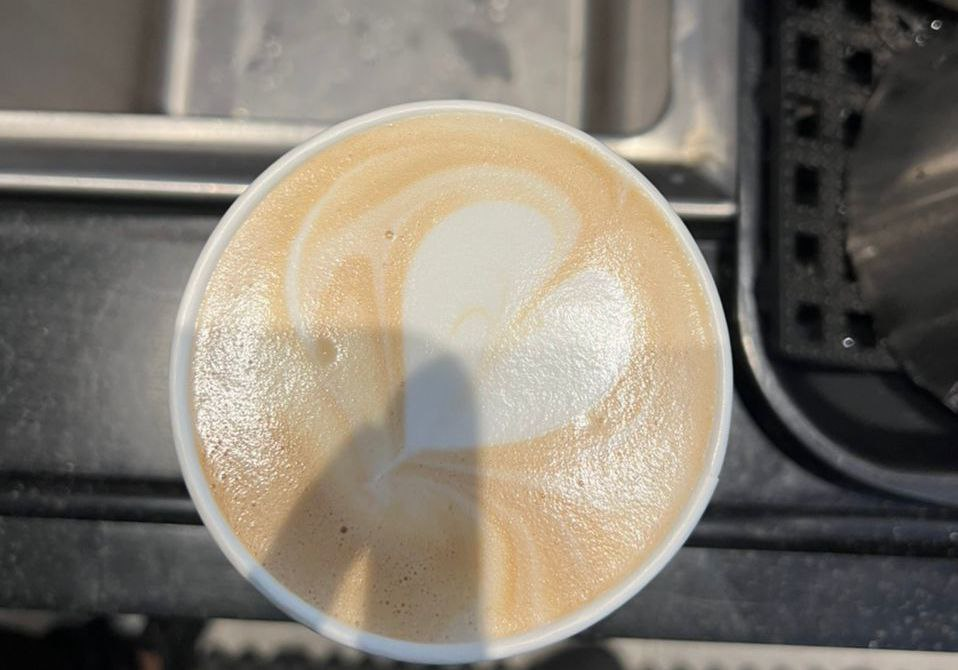
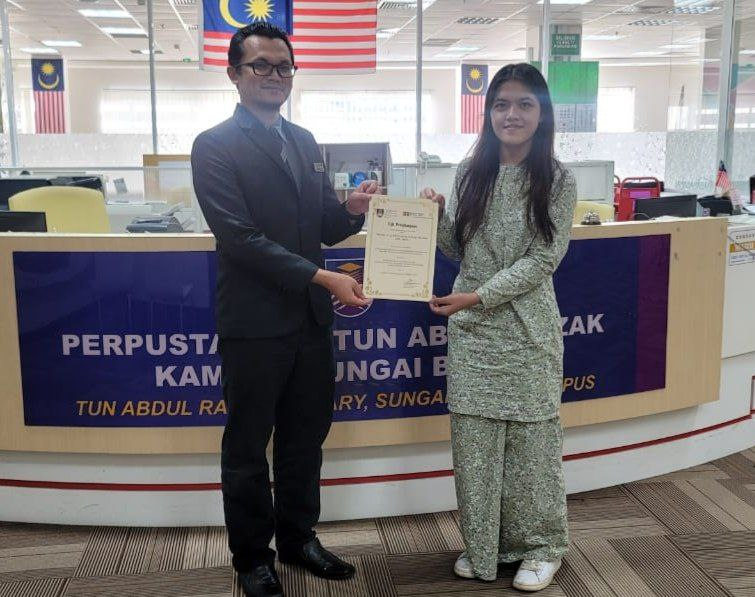

As a barista
I was a part timer barista for 6 months before I got my intake for futher studies
I truly enjoyed my time at Coffee Bean & Tea Leaf as a barista
I also learned a lot of skills such as, latte art, managing time, improving my communication skills and etc.

As an Intern
During August this year, I receive a practical training
for my Diploma in Library Management
it is a new experience for me to be in the field